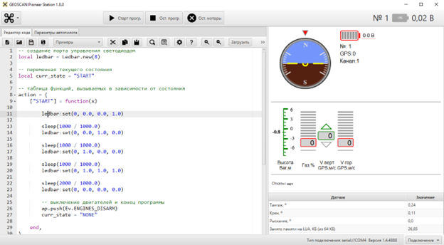

Для прошивки дрона Pioneer требуется программа pioneer station, а также провод для подключения дрона к компьютеру.

Подключение дрона к компьютеру
Для того, чтобы программа распознала дрон, подключите его к компьютеру и включите. В правом нижнем углу находится кнопка подключения, нажмите на нее и выберите подключение по проводу.
Установка прошивки
В левом верхнем углу нажать на иконку дрона и выбрать опцию обновить прошивку дрона.
Необходимая прошивка
Прошивку можно скачать на официальном сайте geoscan pioneer. Ссылка тут